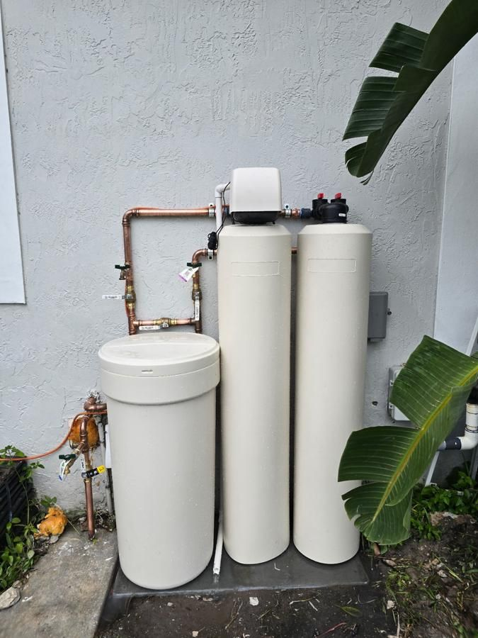

AI Video Ads Swipe File v2
15 AI video ads: 11 long-running brand ads that disclose AI + 4 AI-tool quality benchmarks.

Biscayne Water brand kit (from biscaynewater.com)
#053659 navy primary#032A45 navy dark#021C2E deep navy#FAB3B4 pink#F79A9B pink deep#78DBFF sky#EFE8DF cream#F5EFE5 cream light#FBBF24 star gold#FEFEFE white
Fonts: Poppins (body), Montserrat (headings), Dancing Script (script accent). Logo: biscayne-logo-script-dark-416.webp. Tone: premium, trustworthy, South Florida local. Right: the real install photo; ads marked Install photo fits can use it as the hero.
Rules for every rip: never show or say a price. Offer line: $0 down, 0% interest, payments as low as $69/mo. Real BW hooks: free in-home water test, HSA/FSA on eligible orders, 10-year tank & valve warranty, 5.0 stars from 100+ customers, NSF-certified components, removes chlorine, lead and PFAS.
v2: cut from 33 to 15. Every ad says it is AI in its own copy (quoted under AI evidence). 11 are product-brand ads (median 256 days); 4 are AI-tool showcase ads kept as the quality bar. Big brands' AI ads (e.g. Coca-Cola) aren't labeled in ad copy, so they can't be confirmed in Foreplay; rather than pad, this list is shorter. Run time is the only performance proxy. Pulled Nov 22, 2026.
V01 · Water2
269 days running (since 2026-01-11) · brand has 1197 active ads · 97.5s
AI news / town-hall skitNot runningAI confidence: HighInstall photo fits
Headline
"Enough is enough"
CTA
SHOP_NOW · facebook, instagram, audience_network, messenger, threads
AI evidence
Ad copy: 'This is an AI generated video.'
Transcript (start)
Dyma ddim ymdrech, dyna'n gweithredaeth. Pan wnes i fod tap water yn llwyr? Ar gyfer blynyddoedd... Tap water nid oes wedi bod yn yr holl fforddi ac mae angen iddynt fynd at ei wynebu! Wrth mynedig roedden ni drinio ar ôl tap heb eisiau medru am dwyno Nawr pob morfennol rydych chi mewn gwirioneddf m
Primary text
Still spending £££ of pounds on bottled water? Stuck lugging in case after case from the car to house… Then searching for somewhere to put them that doesn’t… ❌ Steal fridge space ❌ Steal cupboard space ❌ Ruin your kitchen aesthetic This is a waste… A waste of time, a waste of space and a waste of money. But everyone has a reason for drinking bottled water… For some it’s the taste… For other’s it’s the lack of smell compared to their tap water… Whatever the reason is… But there’s another option… Something that takes the water you’re already provided and transforms it. Turning it from regular tap water to beautiful delicious filtered water straight out of the tap 😍 It’s name is Water2 and it’s an undersink water filter already trusted by over 150,000 UK homes ❤️ 100 day taste the difference guarantee 🧬 Filters Chlorine, Lead and much more 🕰️ Lasts up to an entire year This is an AI generated video. You can join over 150,000 homes paying just £0.35p a day for filtered water straight from their tap **Bear Grylls is now a proud owner and investor in Water2!* DISCLAIMER: Tastes are subjective and are not indicative of any related qualities. Filter capabilities and/or contaminants referenced are reference to the efficacy of the filter and not the presence of said item in all water. "Avoid'" is also simply reference to personal preference. UK water is rated as some of the best in the world.
Why it works / rip it for BW: Closest thing to BW in the set: a water-filter brand running a 97-second AI 'fed-up residents confront tap water bosses' town-hall skit for 269 days. Rip: 'Miami residents vs the water bill' town-hall or local-news AI skit about chlorine and hard water, ending on the BW install and the free in-home water test. Never show prices; close with $0 down, 0% interest, payments as low as $69/mo.
Install photo: Yes: cut to the install photo as the resolution shot.
V02 · Angela Caglia Skincare
497 days running (since 2025-07-13) · brand has 112 active ads · 59.4s
AI avatar testimonialStill runningAI confidence: HighInstall photo fits
Headline
Real Words. AI Voice
CTA
SHOP_NOW · facebook, instagram, audience_network, messenger, threads
AI evidence
Ad copy: customer 'preferred not to appear on camera, so we used an AI avatar to share her experience.' Headline: 'Real Words. AI Voice'.
Transcript (start)
I'd been using the Angela Cagula Cell Forte Serum consistently, and it has quickly earned a permanent spot in my skincare routine. From the first application onwards ,I noticed an immediate boost in hydration and beautiful healthy glow The texture is silky And lightweight Rich enough to feel nourish
Primary text
This is a real review from one of our Cell Forté Serum customers. She preferred not to appear on camera, so we used an AI avatar to share her experience.
Why it works / rip it for BW: Longest-running ecom AI ad found (497 days, still running). A real review, read by an AI avatar, labeled honestly. Rip: turn real BW Google reviews from customers who don't want to be on camera into AI avatar testimonials, with the same 'Real words, AI voice' disclosure.
Install photo: Yes: B-roll of the install photo while the avatar talks.
V03 · Mudra Band
474 days running (since 2025-08-05) · 69.2s
AI cinematic brand filmStill runningAI confidence: HighInstall photo fits
Headline
With Mudra, You Become Extraordinary
CTA
LEARN_MORE · facebook, instagram, messenger, threads
AI evidence
Ad copy: '* This video was created using AI video generation tool'.
Transcript (start)
I used to move objects with the force. Now some kid taps his fingers and the curtains close Used light the path with a staff now they tap, and room lights up Magic used make something They use call me The One now everyone bends reality
Primary text
What happens when anyone can control the world with just a gesture?... * This video was created using AI video generation tool
Why it works / rip it for BW: High-production AI film ('Force powers' parody), 474 days, still running. Shows AI can carry a premium cinematic look. Rip: a cinematic AI open (Florida storm, a 'villain' made of scale and chlorine) that hands off to the real BW system.
Install photo: Yes: the install photo as the hero reveal at the end.
V04 · Dotcomcanvas
363 days running (since 2025-11-24) · brand has 234 active ads · 15.1s
AI comedy skitStill runningAI confidence: High
Headline
🔥 BLACK WEEK -40% 🔥
CTA
SHOP_NOW · facebook, instagram, audience_network, messenger, threads
AI evidence
Ad copy opens '🚨 AI-Generated Ad 🚨 (please take it with humor)'.
Transcript (start)
Oh, what a disaster. Get back in there! Yes!!! Ha!!
Primary text
🚨 AI-Generated Ad 🚨 (Please take it with humor) BUT OUR PRODUCTS ARE REAL! 🇩🇪 Made in Germany 📍 Founded in Germany in 2018 ❤️ Over 50,000 satisfied customers ⭐ Over 2,500+ 5-star reviews 🔏 Certificate of authenticity with every order 🏆 Multiple awards 👉 WWW.DOTCOMCANVAS.DE
Why it works / rip it for BW: Short AI comedy skit, 363 days, still running. Rip: a 10-15s AI skit like a shower 'disaster' with white scale everywhere, then the punchline 'just get Biscayne Water'.
V05 · MKI MIYUKI ZOKU
341 days running (since 2024-05-02) · brand has 165 active ads · 15.0s
AI-generated environment (fashion)Not runningAI confidence: HighInstall photo fits
CTA
— · instagram
AI evidence
Ad copy: campaign 'uses an AI generated environment'.
Primary text
The SS24 campaign was shot in collaboration with @xplor.one and uses an AI generated environment, within a virtual production set, combining the use of new technology and traditional fashion photography techniques, to create a realistic world, all within a virtual production studio. Release 1 now available in-store and online. Campaign photography and video by @jackchipper.1 #MKIMIYUKIZOKU
Why it works / rip it for BW: Real product/people placed in an AI-built set, 341 days. Rip: shoot the real tanks, then AI-generate the setting (luxury Coral Gables home, tropical garden) around them.
Install photo: Yes: install photo as the real anchor, AI extends the scene.
V06 · K9 Ballistics Dog Beds
320 days running (since 2025-10-15) · brand has 154 active ads · 11.9s
UGC hook + AI b-rollNot runningAI confidence: HighInstall photo fits
Headline
Get a Bed That Lasts
CTA
LEARN_MORE · facebook, instagram, audience_network, messenger, threads
AI evidence
Ad copy: 'created in part with AI generated content'.
Transcript (start)
This is exactly why I stopped buying cheap dog beds.
Primary text
Tired of cheap dog beds that fall apart when your dog looks at them? 👀 Upgrade to long-lasting play-hard sleep-hard support from K9 Ballistics. Your dog will thank you... By sleeping in. Did we mention there's a 120 Day Chew Proof Guarantee?? Share your pup's play-hard moments in the comments!! (created with in part with AI generated content)
Why it works / rip it for BW: UGC hook ('this is exactly why I stopped buying cheap...') plus AI b-roll of the problem, 320 days. Rip: 'This is exactly why I stopped buying bottled water' hook, AI b-roll of plastic piles and scale, then the install.
Install photo: Yes: closing shot.
V07 · LVLY Singapore
256 days running (since 2026-01-22) · brand has 6 active ads · 10.0s
AI product sceneNot runningAI confidence: HighInstall photo fits
Headline
100% Happiness Guaranteed
CTA
ORDER_NOW · facebook, instagram, messenger, threads
AI evidence
Ad copy: 'Disclaimer: This video was created using AI. But the flowers? Completely real'.
Primary text
🌸 Gifting made easy, joy delivered! 🚚✨ From signature explosion boxes to elegant flower jars - our premium designs are thoughtfully curated and ready to create wow moments. Let them know you care with flowers that are effortlessly LVLY. Same-day delivery, 7 days a week. 💖 *Disclaimer: This video was created using AI. But the flowers? Completely real and absolutely stunning 😉
Why it works / rip it for BW: Ran 256 days. Clever disclosure line that keeps trust. Rip the disclaimer: 'This video was made with AI. The water quality report? Completely real.'
Install photo: Yes: real install photo as the 'completely real' proof.
V08 · Rhythm & Beat
164 days running (since 2026-06-11) · brand has 1011 active ads · 15.2s
AI actor UGC talking headStill runningAI confidence: High
Headline
New Music Collection Sale!
CTA
SHOP_NOW · facebook, instagram, audience_network, messenger, threads
AI evidence
Ad copy: 'Ad Features AI Generated Actors'.
Transcript (start)
Just had a guy literally stop walking to look at my shirt. I'm crossing the parking lot minding my business and this guy clocks, the shirt fully stops points edit and goes where just one word where rhythm in beat real cotton fits right? The graphic doesn't look it's about flake off of gym i told him
Primary text
🎸 New Music Collection Sale! 🎸 Shop 30% OFF While Supplies Last Ad Features AI Generated Actors Shop: RhythmAndBeat.com/Sale
Why it works / rip it for BW: AI actor UGC from a brand with 1,000+ active ads; three ads from this AI-actor series in Foreplay ran 164-165 days and are still running. Story hook: 'a guy literally stopped walking to look at my shirt.' Rip: AI actor story hook like 'My neighbor asked why my shower glass is so clear'.
V09 · FENKA Recovery (Skincare Guru page)
127 days running (since 2026-07-18) · 24.9s
Creator UGC + AI voiceoverStill runningAI confidence: HighInstall photo fits
CTA
SHOP_NOW · facebook, instagram, audience_network, messenger, threads
AI evidence
Copy from this brand: 'This is an AI Voiceover'.
Transcript (start)
No more sore, achy legs since I started wearing FENKA Recovery's Leggings. Calf to thigh compression promotes circulation and muscle recovery It supports your core smooths your tummy and enhances your shape Seamless design no discomfort no camel toe with deep side pockets i can wear them all day try
Primary text
These leggings will have your tired, achy legs feeling good in no time. Try them yourself — use my code SKY10 for 10% off at fanka.com. 30-day free trial, no risk. I've been really impressed with the Fanka RecoverEase Leggings. They are incredibly comfortable, supportive, and easy to wear throughout the day. The graduated compression helps promote circulation and reduces feelings of tired, achy legs, especially after long periods of standing, walking, exercising, or traveling. The fabric feels soft, breathable, and stretchy without being restrictive. I also love the seamless design, which prevents discomfort and creates a smooth, flattering fit. The deep side pockets are practical, and the leggings stay in place without constantly needing adjustment. These leggings can be worn for workouts, running errands, travel, work, recovery days, or simply relaxing at home. Fanka RecoverEase Leggings are suitable for a wide range of people, including active individuals, travelers, people who spend long hours on their feet and anyone looking for extra comfort and leg support throughout the day. Overall, they combine comfort, support, and style, making them a versatile addition to any wardrobe. Im 5'5 150 lbs and I'm wearing size medium. P.S This is an AI Voiceover. #fanka #movewithfanka #compressionleggings #fankaleggings #activewearfashion
Why it works / rip it for BW: Real creator footage with an AI voiceover, 127 days, still running. Cheapest way to scale: film real installs and customers, script the VO, use an AI voice. Rip: real install walk-through footage + AI VO script.
Install photo: Yes: install photo / footage is the visual.
V10 · Tilting Heads
90 days running (since 2026-08-24) · brand has 76 active ads · 37.8s
UGC voiceover + AI visualsStill runningAI confidence: High
Headline
Shop Pawveralls Suspender Boots
CTA
SHOP_NOW · facebook, instagram, audience_network, messenger, threads
AI evidence
Copy: 'This video includes AI-generated visuals created for creative representation of the actual product'.
Transcript (start)
These Poverol Suspender Boots completely changed our monsoon walks. Before these, every walk meant dirty paws all over the house! The clean-up would take twice as long as the walk itself So we switched to Poverols Because all four boots are connected They actually stay on Even when he's running thro
Primary text
No more boots slipping off during walks! Pawveralls Suspender Boots stay securely in place while protecting your dog's paws from hot roads, rain, mud, and rough terrain. Comfortable, lightweight, and made for every adventure. Shop now and keep every step safe. 🐶✨ Disclaimer: This video includes AI-generated visuals created for creative representation of the actual product.
Why it works / rip it for BW: Before/after story told with AI visuals, 90 days, still running. Rip: 'Before BW, every shower meant...' with AI visuals of the before, then the real product.
V11 · Rare Rabbit
47 days running (since 2026-10-06) · brand has 1780 active ads · 87.5s
AI cinematic brand filmStill runningAI confidence: High
CTA
SHOP_NOW · facebook, instagram, messenger, threads
AI evidence
Copy: '*AI-generated content. The activity depicted is fictional'.
Transcript (start)
Go!
Primary text
EVERYTHING DENIM. AW ’26. A new season, seen through denim. Introducing our latest collection for men and women—a study in fit, proportion and everyday dressing. Discover the collection in stores, on the app and at rare.in. #everythingdenim #rarerabbit #rareism #denimstyle #aw26 *AI-generated content. The activity depicted is fictional and should not be attempted or imitated*
Why it works / rip it for BW: Big brand (1,700+ active ads), 87s polished AI film. Only 47 days but still running, kept for production value. Rip: premium AI brand film look for a BW holiday/brand spot.
V12 · Arcads AI
478 days running (since 2025-08-01) · 15.6s
AI avatar UGC (benchmark)Still runningAI confidence: High
Headline
AI Video: Then vs Now
CTA
GET_OFFER_VIEW · facebook, instagram, audience_network, messenger, threads
AI evidence
Ad copy: 'Meet Alex, an AI avatar created with Arcads.ai'.
Transcript (start)
This is what AI used to be. This is an AI generated video that's made from A I, how do look? this Is what Ai Now you can generate me because am ai generated and thousands of other actors using thi new a tool arc ads dot try today try
Primary text
AI video has come a long way in 2 years. Meet Alex, an AI avatar created with Arcads.ai. Experience the next generation of realistic AI video today.
Why it works / rip it for BW: AI-tool ad, 478 days, still running. Shows the current ceiling for AI UGC talking heads. Use as the quality bar for any BW AI avatar ad.
V13 · Creatify AI demo (kyoto.89 page)
151 days running (since 2026-06-24) · 37.2s
AI presenter (benchmark)Still runningAI confidence: High
CTA
SEE_DETAILS · facebook, instagram, audience_network, messenger, threads
AI evidence
Ad copy: 'This yoga instructor isn't real. Everything you see in this video was generated with AI using Creatify.'
Transcript (start)
Hi everyone, I always try to start my day with a little movement and mindfulness. Life can get busy so taking time for yourself is really important today and spending some time at my favorite yoga in Pilates studio it's My place To recharge refocus And reconnect With myself Pilates helps me stay str
Primary text
Comment “AI” and I’ll send you the prompt + access. Morning Reset Would you have guessed? This yoga instructor isn’t real. Everything you see in this video was generated with AI using Creatify. Realistic movements. Natural expressions. Professional UGC content. Powered by Ad Flow by @creatify_ai_official ✨ #AdFlow #Creatify #UGC #AIADS
Why it works / rip it for BW: 151 days, still running. Realistic AI presenter with calm lifestyle setting. Benchmark for an AI 'wellness' presenter talking about shower water and skin.
V14 · Makeugcai
70 days running (since 2026-08-28) · 17.1s
AI UGC realism (benchmark)Not runningAI confidence: High
CTA
SIGN_UP · facebook, instagram, audience_network, messenger, threads
AI evidence
Ad copy: 'This is AI. Every pore, every eyelash and every vein you just saw was generated with AI inside MakeUGC.'
Transcript (start)
Still think I'm real? Wrong, this woman doesn't exist. i was made inside MakeUGC But her skin Her eyes Her hair And her lips look so real One tool Full realism You can do it too for just $1 today
Primary text
This is AI. Every pore, every eyelash and every vein you just saw was generated with AI inside MakeUGC. This is the level of realism brands are using right now for their UGC ads. AI avatars that look human, film product videos on demand, and never charge per post. He made $7K this month and he doesn’t even exist. Sign up today for just $1 #AIUGC #AIImages #AIPhotography #AIWorkflow #generativeai
Why it works / rip it for BW: 70 days. 'Still think I'm real?' reveal hook. Benchmark for skin-detail realism if BW does skin/hair close-ups.
V15 · Artlist.io
64 days running (since 2026-08-10) · 30.1s
AI high-end production (benchmark)Not runningAI confidence: High
Headline
Professionals choose Artlist AI
CTA
LEARN_MORE · facebook, instagram
AI evidence
Ad copy: 'Every shot in this video was generated with AI. This is what high-end production looks like now'.
Transcript (start)
The video production industry is changing before our eyes, and Artlist is leading the way forward with the world's most complete creative AI platform. Get access to the most advanced A I models all in one place so you can create high end video production at scale joined biggest global brands and be
Primary text
Every shot in this video was generated with AI. This is what high-end production looks like now — and it's available to any creative team, at any scale.
Why it works / rip it for BW: 64 days. Cinematic, commercial-grade AI footage. Benchmark for a premium BW brand spot.